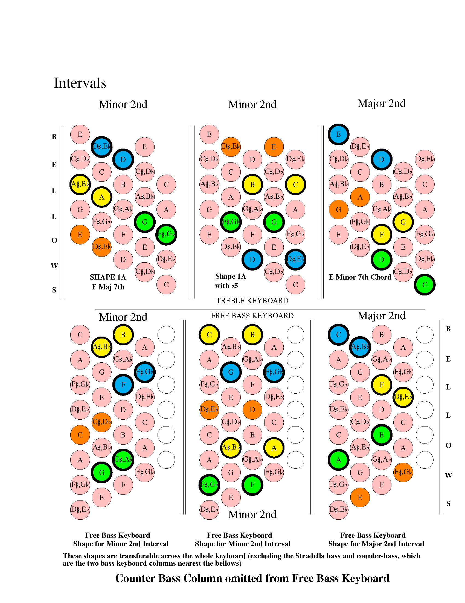
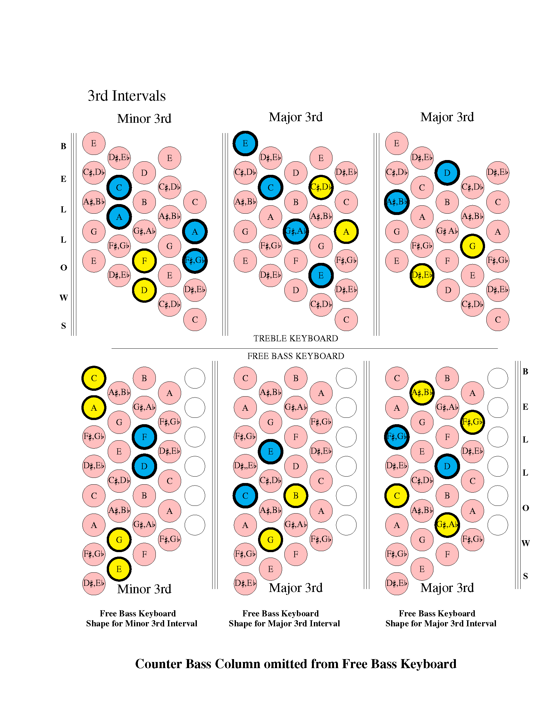

Section 3.1 Intervals
Before discussing scales it is useful to understand how intervals between notes are described.
The musical distance between notes on your instrument keyboard or on a musical staff is known as an interval. This interval might be described as a minor 2nd, a major 2nd, a minor 3rd, a major 3rd, a 5th, a 7th etc;
The interval between two notes can be obtained by counting the number of semi-tones on the keyboard or staff but, when counting intervals, the first note, should be counted as one and not zero.
| Interval Type | Count between notes |
|---|---|
| Minor 2nd | 2 Semitones |
| Major 2nd | 3 Semitones |
| Minor 3rd | 4 Semitones |
| Major 3rd | 5 Semitones |
| Perfect 4th | 6 Semitones |
| Flat 5 | 7 Semitones |
| 5th | 8 Semitones |
| Augmented 5th | 9 Semitones |
| 6th | 10 Semitones |
| Minor 7th | 11 Semitones |
| Major 7th | 12 Semitones |
Subsection 3.1.1 2nd-interval-shapes
These shapes can be moved to any position on the keyboard and show the relative position of keyboard buttons for the different intervals.
Using intervals alone it is possible to build the different scales and chords. Knowledge of intervals can also be very useful in sight reading and I hope to include some examples of this later in the manual.

Subsection 3.1.2 3rd-interval-shapes
These shapes can be moved to any position on the keyboard and show the relative position of keyboard buttons for the different intervals.
Using intervals alone it is possible to build the different scales and chords. Knowledge of intervals can also be very useful in sight reading and I hope to include some examples of this later in the manual.
